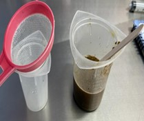
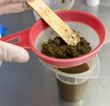
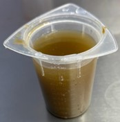

Guía parasitaria de Helmintos, con muestras de rumiantes de la UTN sede Atenas
Rumiantes Menores



Luego se procedió a pasar la mezcla por un colador para evitar el exceso de material, así como se muestra en las imágenes. El líquido filtrado se dejó reposar durante una hora.
CLick en la info de las imagenes sale el cuadro que manda